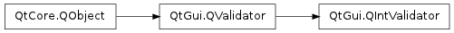

QIntValidator ¶

Synopsis ¶
Detailed Description ¶
The PySide.QtGui.QIntValidator class provides a validator that ensures a string contains a valid integer within a specified range.
Example of use:
validator = QIntValidator ( 100 , 999 , self ) edit = QLineEdit ( self ) # the edit lineedit will only accept integers between 100 and 999 edit . setValidator ( validator )Below we present some examples of validators. In practice they would normally be associated with a widget as in the example above.
pos = 0 v = QIntValidator ( 100 , 900 , self ) str = "1" v . validate ( str , pos ) # returns Intermediate str = "012" v . validate ( str , pos ) # returns Intermediate str = "123" v . validate ( str , pos ) # returns Acceptable str = "678" v . validate ( str , pos ) # returns Acceptable str = "999" v . validate ( str , pos ) # returns Intermediate str = "1234" v . validate ( str , pos ) # returns Invalid str = "-123" v . validate ( str , pos ) # returns Invalid str = "abc" v . validate ( str , pos ) # returns Invalid str = "12cm" v . validate ( str , pos ) # returns InvalidNotice that the value 999 returns Intermediate. Values consisting of a number of digits equal to or less than the max value are considered intermediate. This is intended because the digit that prevents a number to be in range is not necessarily the last digit typed. This also means that an intermediate number can have leading zeros.
The minimum and maximum values are set in one call with PySide.QtGui.QIntValidator.setRange() , or individually with PySide.QtGui.QIntValidator.setBottom() and PySide.QtGui.QIntValidator.setTop() .
PySide.QtGui.QIntValidator uses its PySide.QtGui.QValidator.locale() to interpret the number. For example, in Arabic locales, PySide.QtGui.QIntValidator will accept Arabic digits. In addition, PySide.QtGui.QIntValidator is always guaranteed to accept a number formatted according to the “C” locale.
See also
PySide.QtGui.QDoubleValidator PySide.QtGui.QRegExpValidator Line Edits Example
- class PySide.QtGui. QIntValidator ( [ parent=None ] ) ¶
- class PySide.QtGui. QIntValidator ( bottom , top , parent )
-
Parameters: - bottom – PySide.QtCore.int
- parent – PySide.QtCore.QObject
- top – PySide.QtCore.int
Constructs a validator with a parent object that accepts all integers.
Constructs a validator with a parent , that accepts integers from minimum to maximum inclusive.
- PySide.QtGui.QIntValidator. bottom ( ) ¶
-
Return type: PySide.QtCore.int This property holds the validator’s lowest acceptable value.
By default, this property’s value is derived from the lowest signed integer available (typically -2147483647).
- PySide.QtGui.QIntValidator. setBottom ( arg__1 ) ¶
-
Parameters: arg__1 – PySide.QtCore.int This property holds the validator’s lowest acceptable value.
By default, this property’s value is derived from the lowest signed integer available (typically -2147483647).
- PySide.QtGui.QIntValidator. setRange ( bottom , top ) ¶
-
Parameters: - bottom – PySide.QtCore.int
- top – PySide.QtCore.int
Sets the range of the validator to only accept integers between bottom and top inclusive.
- PySide.QtGui.QIntValidator. setTop ( arg__1 ) ¶
-
Parameters: arg__1 – PySide.QtCore.int This property holds the validator’s highest acceptable value.
By default, this property’s value is derived from the highest signed integer available (typically 2147483647).
- PySide.QtGui.QIntValidator. top ( ) ¶
-
Return type: PySide.QtCore.int This property holds the validator’s highest acceptable value.
By default, this property’s value is derived from the highest signed integer available (typically 2147483647).